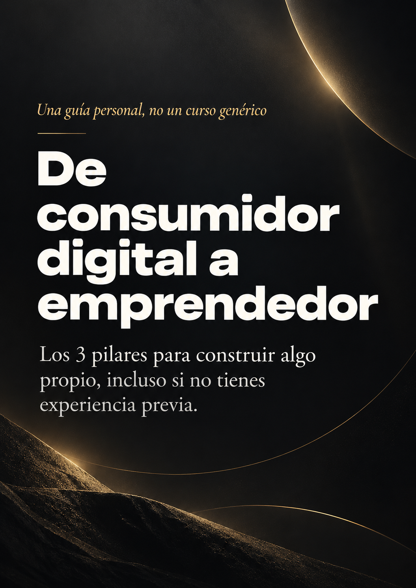
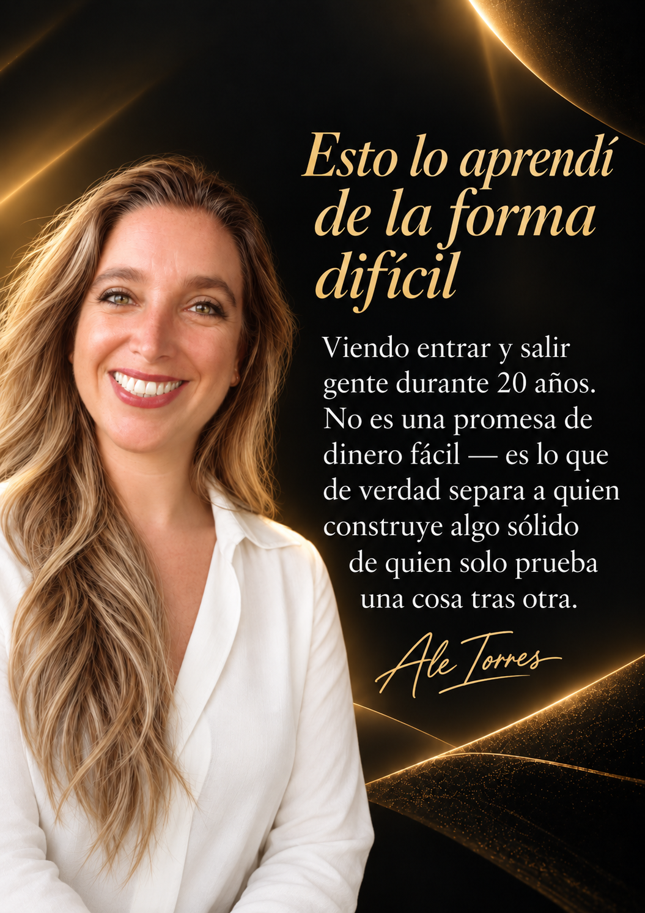

El sistema importa más que tu esfuerzo
La pregunta no es cuánto puedes trabajar. Es de qué te estás apalancando.
La mayoría cree que un negocio digital significa esfuerzo individual sin parar. Un negocio bien elegido no funciona así: te apalanca de algo más grande que tú — una comunidad, una estructura, un sistema — para que tu esfuerzo rinda más de lo que rendiría solo.
Cómo distinguir un sistema real de una promesa vacía
Si ya perdiste dinero antes, esa desconfianza es información válida — no un obstáculo.
Pago único, sin mensualidades ni cuotas ocultas
Lo que construyo se queda construido, incluso si pauso un tiempo
El ingreso viene de un sistema real, no solo de traer gente
Puedo empezar con poco y medir resultados antes de comprometerme más
Empieza chico, sin perder lo construido
No necesitas capital grande para probar algo real.
Lo importante es que lo que construyas al inicio no se pierda con el tiempo. Un primer paso bien dado se puede escalar después, con la comunidad y la experiencia que ya ganaste en el camino.
¿Qué tipo de emprendedor eres tú?
9 preguntas rápidas. No hay respuestas correctas — solo te ayudan a ver con más claridad qué tipo de oportunidad se alinea contigo.
— Ale Torres